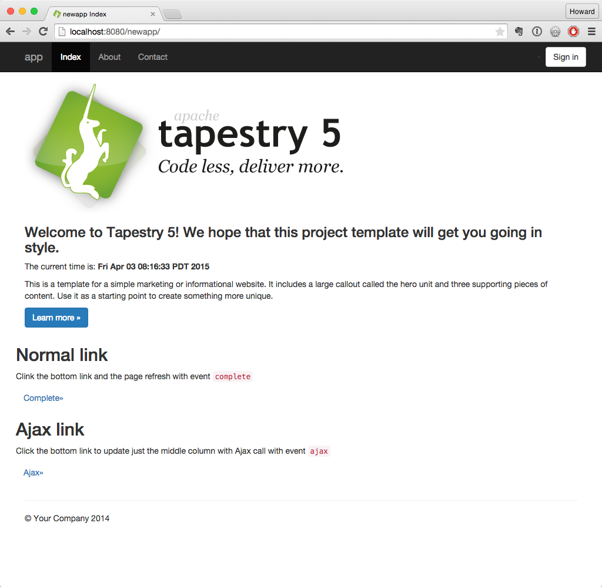

Getting Started
Getting started with Tapestry is easy, and you have lots of ways to begin: watch a video, browse the source code of a working demo app, create a skeleton app using Maven, or step through the tutorial.
Watch a short video
For a fast-paced introduction, watch Mark W. Shead’s 10 Minute Demo. This video shows how to set up a simple Tapestry application, complete with form validation, Hibernate-based persistence, and Ajax. The video provides a preview of the development speed and productivity that experienced Tapestry users enjoy.
Play with a working demo app
You can also play with Tapestry via our live demonstration applications. To start, have a look at the Hotel Booking Demo. The source code is provided so you can download and play with it. Also check out the Jumpstart demonstration site.
Create your first Tapestry project
The easiest way to start a new app is to use Apache Maven to create your initial project; Maven can use an archetype (a kind of project template) to create a bare-bones Tapestry application for you.
Once you have Maven installed, execute the following command:
mvn archetype:generate -Dfilter=org.apache.tapestry:quickstart
(Alternatively, if you want to get an archetype for a not-yet-released version of Tapestry – most users don’t – you can use the staging URI, https://repository.apache.org/content/repositories/staging ).
Maven will prompt you for the archetype to create ("Tapestry 5 Quickstart Project") and the exact version number (e.g., "5.8.7"). It also asks you for a group id, an artifact id, and a version number. You can see this in the following transcript:
$ mvn archetype:generate -DarchetypeCatalog=http://tapestry.apache.org [INFO] Scanning for projects... [INFO] [INFO] ------------------------------------------------------------------------ [INFO] Building Maven Stub Project (No POM) 1 [INFO] ------------------------------------------------------------------------ [INFO] [INFO] >>> maven-archetype-plugin:2.2:generate (default-cli) @ standalone-pom >>> [INFO] [INFO] <<< maven-archetype-plugin:2.2:generate (default-cli) @ standalone-pom <<< [INFO] [INFO] --- maven-archetype-plugin:2.2:generate (default-cli) @ standalone-pom --- [INFO] Generating project in Interactive mode [INFO] No archetype defined. Using maven-archetype-quickstart (org.apache.maven.archetypes:maven-archetype-quickstart:1.0) Choose archetype: 1: http://tapestry.apache.org -> org.apache.tapestry:quickstart (Tapestry 5 Quickstart Project) 2: http://tapestry.apache.org -> org.apache.tapestry:tapestry-archetype (Tapestry 5.4.5 Archetype) Choose a number or apply filter (format: [groupId:]artifactId, case sensitive contains): : 1 Choose org.apache.tapestry:quickstart version: 1: 5.0.19 2: 5.1.0.5 3: 5.2.6 4: 5.3.7 5: 5.4.5 6: 5.5.0 7: 5.6.4 8: 5.7.3 9: 5.8.7 Choose a number: 9: 9 Define value for property 'groupId': : com.example Define value for property 'artifactId': : newapp Define value for property 'version': 1.0-SNAPSHOT: : Define value for property 'package': com.example: : com.example.newapp Confirm properties configuration: groupId: com.example artifactId: newapp version: 1.0-SNAPSHOT package: com.example.newapp Y: : Y [INFO] ---------------------------------------------------------------------------- [INFO] Using following parameters for creating project from Archetype: quickstart:5.8.6 [INFO] ---------------------------------------------------------------------------- [INFO] Parameter: groupId, Value: com.example [INFO] Parameter: artifactId, Value: newapp [INFO] Parameter: version, Value: 1.0-SNAPSHOT [INFO] Parameter: package, Value: com.example.newapp [INFO] Parameter: packageInPathFormat, Value: com/example/newapp [INFO] Parameter: package, Value: com.example.newapp [INFO] Parameter: version, Value: 1.0-SNAPSHOT [INFO] Parameter: groupId, Value: com.example [INFO] Parameter: artifactId, Value: newapp [INFO] project created from Archetype in dir: /home/joeuser/junk/junk2/newapp [INFO] ------------------------------------------------------------------------ [INFO] BUILD SUCCESS [INFO] ------------------------------------------------------------------------ [INFO] Total time: 40.020s [INFO] Finished at: Sun Apr 09 16:55:01 EDT 2020 [INFO] Final Memory: 16M/303M [INFO] ------------------------------------------------------------------------
Maven will (after performing a number of one-time downloads) create a skeleton project ready to run.
Because we specified an artifactId of "newapp", the project is created in the newapp directory.
(Note: if you get "Unable to get resource" warnings at this stage, you may be behind a firewall which blocks outbound HTTP requests to Maven repositories.)
To run the skeleton application, change to the newapp directory and execute the mvn jetty:run command to start the Jetty app server:
$ cd newapp
$ mvn jetty:run
[INFO] Scanning for projects...
[INFO]
[INFO] ------------------------------------------------------------------------
[INFO] Building newapp Tapestry 5 Application 1.0-SNAPSHOT
[INFO] ------------------------------------------------------------------------
...
Application 'app' (version 1.0-SNAPSHOT-DEV) startup time: 329 ms to build IoC Registry, 919 ms overall.
______ __ ____
/_ __/__ ____ ___ ___ / /_______ __ / __/
/ / / _ `/ _ \/ -_|_-</ __/ __/ // / /__ \
/_/ \_,_/ .__/\__/___/\__/_/ \_, / /____/
/_/ /___/ 5.8.7 (development mode)
[INFO] Started SelectChannelConnector@0.0.0.0:8080
[INFO] Started Jetty Server
After some more one-time downloads you can open your browser to http://localhost:8080/newapp to see the application running:

The application consists of three pages sharing a common look and feel.
The initial page, Index, allows you to perform some basic operations.
You can also load the newly-created project it into any IDE and start coding. See the next section on where to find the different components of the application.
Exploring the generated project
The archetype creates the following files:
newapp/
├── build.gradle
├── gradle
│ └── wrapper
│ ├── gradle-wrapper.jar
│ └── gradle-wrapper.properties
├── gradlew
├── gradlew.bat
├── pom.xml
└── src
├── main
│ ├── java
│ │ └── com
│ │ └── example
│ │ └── newapp
│ │ ├── components
│ │ │ └── Layout.java
│ │ ├── pages
│ │ │ ├── About.java
│ │ │ ├── Contact.java
│ │ │ ├── Error404.java
│ │ │ ├── Index.java
│ │ │ └── Login.java
│ │ └── services
│ │ ├── AppModule.java
│ │ ├── DevelopmentModule.java
│ │ └── QaModule.java
│ ├── resources
│ │ ├── com
│ │ │ └── example
│ │ │ └── newapp
│ │ │ ├── components
│ │ │ │ └── Layout.tml
│ │ │ ├── logback.xml
│ │ │ └── pages
│ │ │ ├── About.tml
│ │ │ ├── Contact.tml
│ │ │ ├── Error404.tml
│ │ │ ├── Index.properties
│ │ │ ├── Index.tml
│ │ │ └── Login.tml
│ │ └── log4j.properties
│ └── webapp
│ ├── WEB-INF
│ │ ├── app.properties
│ │ └── web.xml
│ ├── favicon.ico
│ ├── images
│ │ └── tapestry.png
│ └── mybootstrap
│ ├── css
│ │ ├── bootstrap-responsive.css
│ │ └── bootstrap.css
│ ├── img
│ │ ├── glyphicons-halflings-white.png
│ │ └── glyphicons-halflings.png
│ └── js
│ └── bootstrap.js
├── site
│ ├── apt
│ │ └── index.apt
│ └── site.xml
└── test
├── conf
│ ├── testng.xml
│ └── webdefault.xml
├── java
│ └── PLACEHOLDER
└── resources
└── PLACEHOLDER
30 directories, 39 files
A Tapestry application is composed of pages, each page consisting of one template file and one Java class.
Tapestry page templates have the .tml extension and are found within src/main/resources/ under the app’s pages package (src/main/resources/com/example/newapp/pages, in this example).
Templates are essentially HTML with some special markup to reference properties in the corresponding Java class and to reference ready-made or custom components.
Similarly, Tapestry page classes are found in within the src/main/java under the app’s pages package (src/main/java/com/example/newapp/pages, in this example) and their name matches their template name (Index.tml → Index.java).
In the skeleton project, most of the HTML is not found on the pages themselves but in a Layout component which acts as a global template for the whole site.
Java classes for components live in src/main/java/com/example/newapp/components and component templates go in src/main/resources/com/example/newapp/components.
The archetype includes a few optional extras:
-
The bundled version of the Bootstrap CSS library has a per-project override. You can see the files in
src/webapp/context/mybootstrap, and the overrides to enable that inAppModule.java. -
By default, Tapestry uses Prototype as its client-side library, but the archetype overrides this to jQuery, which is preferred for new projects.
-
The archetype adds a simple filter that shows the timing of each request.
-
The archetype sets up not just for builds with Maven, but also via Gradle.
What’s next?
To deepen your understanding, step through the Tapestry Tutorial, which goes into much more detail about setting up your project as well as loading it into Eclipse… then continues on to teach you more about Tapestry.
Be sure to read about the core Tapestry Principles, and browse the User Guide.